layout: true .toc.banner[ .shorttitle[ [ГИС аспирантура](break.html#home) ] ] --- name: home class: metadata customtitle middle left giphy .toc.sidebar.left-column[ .outline[ # [К 06 февраля](#dataset) ] ] .toc.mainbar.right-column.scrollable[ .author[Никита Платонов] .institute[с.н.с. ИПЭЭ РАН] .title[ Общие вопросы, введение ] .subtitle[ ГИС технологии в биологических исследованиях ] .what[ Занятие 01 ] .where[ ] .when[ .updated[Обновлено: 2025-02-06 12:22] ] ] --- # Организационные вопросы -- + Домашние задания выдаются раз в две недели на шесть дней со сдачей до 12:00 Мск (UTC+3) в среду. При уважительной причине допускается сдача на неделю позже. Проверяются во второй половине среды и/или в четверг утром. Выносятся на обсуждение на занятии в четверг. -- + Домашние задания можно высылать как по почте, так и в Telegram -- + В среду вечером перекличка, кто собирается приходить в класс. Чтобы не включать проектор, если никого в классе не будет. Если преподаватель предупреждает, если не сможет провести занятие в классе; в этом случае в класс приходить не надо. -- + Форма аттестации – зачет. Для зачета нужно сделать все домашние задания. Преподаватель может выдать индивидуальные задания, которые также будут учитываться для получения зачёта. --- name: dataset .toc.sidebar.left-column[ .outline[ # [К 06 февраля](#dataset).fg[] ## [Данные](#dataset).fg[] ### [Для освоения](#dataset).fg[].bg[] ### [Об этих данных](#datasource) ## [Программы](#soft) ## [Попробовать](#before) ] ] .toc.mainbar.right-column.scrollable[ .header.broad[ Для освоения ] .fixprecode[ Экспедиция Арктического плавучего университета рейса 2023-2 <a name=cite-winterschool2025></a>([Платонов, 2025](#bib)). Перейти по DOI (Zenodo) и распаковать. Папка `input` должна быть в рабочей директории. ] ] --- name: datasource .toc.sidebar.left-column[ .outline[ # [К 06 февраля](#dataset).fg[] ## [Данные](#dataset).fg[] ### [Для освоения](#dataset) ### [Об этих данных](#datasource).fg[] #### [Natural Earth](#datasource) <span class="bullet bullet-active">[•](#datasource)</span><span class="bullet mslide9m">[•](#Ha5c44)</span>.fg[].bg[] #### [OSM береговая линия](#osmdata) #### [GEBCO батиметрия](#download-gebco) ## [Программы](#soft) ## [Попробовать](#before) ] ] .toc.mainbar.right-column.scrollable[ .header.broad[ Natural Earth ] .fixprecode[ Для создания картографической подложки. <iframe src="https://www.naturalearthdata.com/downloads/" width="1330" height="400px" data-external="1"></iframe> ] ] --- name: Ha5c44 .toc.sidebar.left-column[ .outline[ # [К 06 февраля](#dataset).fg[] ## [Данные](#dataset).fg[] ### [Для освоения](#dataset) ### [Об этих данных](#datasource).fg[] #### [Natural Earth](#datasource) <span class="bullet bullet">[•](#datasource)</span><span class="bullet bullet-active">[•](#Ha5c44)</span>.fg[].bg[] #### [OSM береговая линия](#osmdata) #### [GEBCO батиметрия](#download-gebco) ## [Программы](#soft) ## [Попробовать](#before) ] ] .toc.mainbar.right-column.scrollable[ .header.broad[ Natural Earth ] .fixprecode[ .font97[ + [Natural Earth World GIS Data](https://www.naturalearthdata.com/) + [Downloads](https://www.naturalearthdata.com/downloads) + [Download all vector themes as SHP](https://naciscdn.org/naturalearth/packages/natural_earth_vector.zip) - прямая ссылка на скачивание. В наборе ([Платонов, 2025](#bib)) используется векторные данные, приведенные ниже. Их скачивать не обязательно. + [10m_physical/ne_10m_graticules_all/ne_10m_graticules_5.shp](https://naciscdn.org/naturalearth/10m/physical/ne_10m_graticules_5.zip) - линии долгот-широт через 5 градусов, для помощи в ориентации на север + [10m_physical/ne_10m_ocean.shp](https://naciscdn.org/naturalearth/10m/physical/ne_10m_ocean.zip) - полигоны с морями и океанами, разделить сушу и море + [10m_physical/ne_10m_geography_regions_polys.shp](https://naciscdn.org/naturalearth/10m/physical/ne_10m_geography_regions_polys.zip) - полигоны для подписей сухопутных названий + [10m_physical/ne_10m_geography_marine_polys.shp](https://naciscdn.org/naturalearth/10m/physical/ne_10m_geography_marine_polys.zip) - полигоны для подписей морей + [10m_cultural/ne_10m_populated_places.shp](https://naciscdn.org/naturalearth/10m/cultural/ne_10m_populated_places.zip) - точки населенных пунктов ] ] ] --- name: osmdata .toc.sidebar.left-column[ .outline[ # [К 06 февраля](#dataset).fg[] ## [Данные](#dataset).fg[] ### [Для освоения](#dataset) ### [Об этих данных](#datasource).fg[] #### [Natural Earth](#datasource) #### [OSM береговая линия](#osmdata).fg[].bg[] #### [GEBCO батиметрия](#download-gebco) ## [Программы](#soft) ## [Попробовать](#before) ] ] .toc.mainbar.right-column.scrollable[ .header.broad[ OSM береговая линия ] .fixprecode[ Эти данные для более дательного отображения береговой линии по сравнению с Natural Earth. + [Data Derived from OpenStreetMap for Download](https://osmdata.openstreetmap.de/) + [Land Polygons](https://osmdata.openstreetmap.de/data/land-polygons.html) + [Download large simplified polygons](https://osmdata.openstreetmap.de/download/simplified-land-polygons-complete-3857.zip). <iframe src="https://osmdata.openstreetmap.de/" width="1330" height="400px" data-external="1"></iframe> ] ] --- name: download-gebco .toc.sidebar.left-column[ .outline[ # [К 06 февраля](#dataset).fg[] ## [Данные](#dataset).fg[] ### [Для освоения](#dataset) ### [Об этих данных](#datasource).fg[] #### [Natural Earth](#datasource) #### [OSM береговая линия](#osmdata) #### [GEBCO батиметрия](#download-gebco).fg[].bg[] ## [Программы](#soft) ## [Попробовать](#before) ] ] .toc.mainbar.right-column.scrollable[ .header.broad[ GEBCO батиметрия ] .fixprecode[ + https://www.gebco.net/ + [Gridded Bathymetry Data](https://www.gebco.net/data_and_products/gridded_bathymetry_data/) + [Download data for user-defined areas](https://www.gebco.net/data_and_products/gridded_bathymetry_data/#area) + [Application](https://download.gebco.net/). Откройте в новой вкладке по размеру экрана браузера. Полученные с этого источника данные включены в набор ([Платонов, 2025](#bib)) с уменьшенным масштабом. <iframe src="https://download.gebco.net/" width="1330" height="400px" data-external="1"></iframe> ] ] --- name: soft .toc.sidebar.left-column[ .outline[ # [К 06 февраля](#dataset).fg[] ## [Данные](#dataset) ## [Программы](#soft).fg[] ### [QGIS](#soft).fg[] #### [Ядро](#soft) <span class="bullet bullet-active">[•](#soft)</span><span class="bullet mslide15m">[•](#Hb9e98)</span>.fg[].bg[] #### [Расширения](#soft-qgis-plugins) ### [R](#H11d0d) ## [Попробовать](#before) ] ] .toc.mainbar.right-column.scrollable[ .header.broad[ Ядро ] .fixprecode[ <!-- [QGIS Web](https://qgis.org/en/site/) --> Сайт https://qgis.org/. Находим "Download" <iframe src="https://qgis.org/" width="1330" height="400px" data-external="1"></iframe> ] ] --- https://qgis.org/en/site/forusers/download.html name: Hb9e98 .toc.sidebar.left-column[ .outline[ # [К 06 февраля](#dataset).fg[] ## [Данные](#dataset) ## [Программы](#soft).fg[] ### [QGIS](#soft).fg[] #### [Ядро](#soft) <span class="bullet bullet">[•](#soft)</span><span class="bullet bullet-active">[•](#Hb9e98)</span>.fg[].bg[] #### [Расширения](#soft-qgis-plugins) ### [R](#H11d0d) ## [Попробовать](#before) ] ] .toc.mainbar.right-column.scrollable[ .header.broad[ Ядро ] .fixprecode[ <iframe src="https://qgis.org/en/site/forusers/download.html" width="1330" height="400px" data-external="1"></iframe> Прямые ссылки для скачивания установочного файла [QGIS 3.34 LTR](https://download.qgis.org//downloads/QGIS-OSGeo4W-3.34.14-1.msi) и [QGIS 3.40 Latest](https://download.qgis.org//downloads/QGIS-OSGeo4W-3.40.2-1.msi) под Windows (актуальны на 26 января 2025 г.) Если не получается открыть, можно забрать отсюда: [QGIS 3.34 LTR](https://www.dropbox.com/scl/fi/cuccvi24xgmi33qu5zwia/QGIS-OSGeo4W-3.34.14-1.msi?rlkey=wckvkxprvtsz1bnz3g38g6nkr&st=959qlat8&dl=1) или [QGIS 3.40 Latest](https://www.dropbox.com/scl/fi/q5f1qimfcrukrvivnyp3n/QGIS-OSGeo4W-3.40.2-1.msi?rlkey=zci6w4sehiakfeyrtkjyic8c1&st=wnu0xaql&dl=1) до 15 февраля 2025 г. ] ] --- name: soft-qgis-plugins .toc.sidebar.left-column[ .outline[ # [К 06 февраля](#dataset).fg[] ## [Данные](#dataset) ## [Программы](#soft).fg[] ### [QGIS](#soft).fg[] #### [Ядро](#soft) #### [Расширения](#soft-qgis-plugins).fg[].bg[] ##### [QuickMapServices](#H19bdb) ### [R](#H11d0d) ## [Попробовать](#before) ] ] .toc.mainbar.right-column.scrollable[ .header.broad[ Расширения ] .fixprecode[ https://plugins.qgis.org/ <iframe src="https://plugins.qgis.org/plugins/?sort=-downloads" width="1330" height="400px" data-external="1"></iframe> ] ] --- name: H19bdb .toc.sidebar.left-column[ .outline[ # [К 06 февраля](#dataset).fg[] ## [Данные](#dataset) ## [Программы](#soft).fg[] ### [QGIS](#soft).fg[] #### [Ядро](#soft) #### [Расширения](#soft-qgis-plugins).fg[] ##### [QuickMapServices](#H19bdb) <span class="bullet bullet-active">[•](#H19bdb)</span><span class="bullet mslide18m">[•](#Hc758f)</span><span class="bullet mslide19m">[•](#Hb05fc)</span><span class="bullet mslide20m">[•](#He2ae2)</span><span class="bullet mslide21m">[•](#H95a91)</span><span class="bullet mslide22m">[•](#H0ca04)</span>.fg[].bg[] ### [R](#H11d0d) ## [Попробовать](#before) ] ] .toc.mainbar.right-column.scrollable[ .header.broad[ QuickMapServices ] .fixprecode[ [Страница проекта](https://plugins.qgis.org/plugins/quick_map_services/) <iframe src="https://plugins.qgis.org/plugins/quick_map_services/" width="1330" height="400px" data-external="1"></iframe> Установить в QGIS ] ] --- name: Hc758f .toc.sidebar.left-column[ .outline[ # [К 06 февраля](#dataset).fg[] ## [Данные](#dataset) ## [Программы](#soft).fg[] ### [QGIS](#soft).fg[] #### [Ядро](#soft) #### [Расширения](#soft-qgis-plugins).fg[] ##### [QuickMapServices](#H19bdb) <span class="bullet bullet">[•](#H19bdb)</span><span class="bullet bullet-active">[•](#Hc758f)</span><span class="bullet mslide19m">[•](#Hb05fc)</span><span class="bullet mslide20m">[•](#He2ae2)</span><span class="bullet mslide21m">[•](#H95a91)</span><span class="bullet mslide22m">[•](#H0ca04)</span>.fg[].bg[] ### [R](#H11d0d) ## [Попробовать](#before) ] ] .toc.mainbar.right-column.scrollable[ .header.broad[ QuickMapServices ] .fixprecode[ 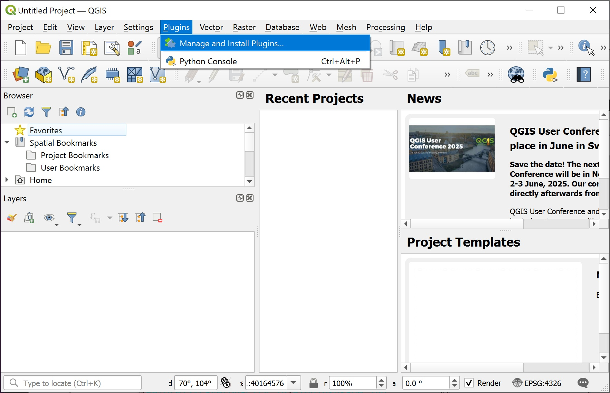 ] ] --- name: Hb05fc .toc.sidebar.left-column[ .outline[ # [К 06 февраля](#dataset).fg[] ## [Данные](#dataset) ## [Программы](#soft).fg[] ### [QGIS](#soft).fg[] #### [Ядро](#soft) #### [Расширения](#soft-qgis-plugins).fg[] ##### [QuickMapServices](#H19bdb) <span class="bullet bullet">[•](#H19bdb)</span><span class="bullet bullet">[•](#Hc758f)</span><span class="bullet bullet-active">[•](#Hb05fc)</span><span class="bullet mslide20m">[•](#He2ae2)</span><span class="bullet mslide21m">[•](#H95a91)</span><span class="bullet mslide22m">[•](#H0ca04)</span>.fg[].bg[] ### [R](#H11d0d) ## [Попробовать](#before) ] ] .toc.mainbar.right-column.scrollable[ .header.broad[ QuickMapServices ] .fixprecode[ 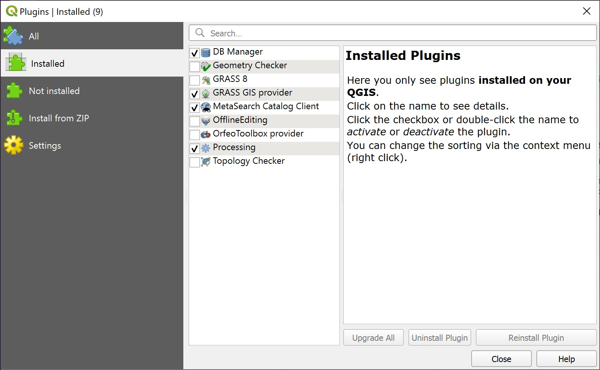 ] ] --- name: He2ae2 .toc.sidebar.left-column[ .outline[ # [К 06 февраля](#dataset).fg[] ## [Данные](#dataset) ## [Программы](#soft).fg[] ### [QGIS](#soft).fg[] #### [Ядро](#soft) #### [Расширения](#soft-qgis-plugins).fg[] ##### [QuickMapServices](#H19bdb) <span class="bullet bullet">[•](#H19bdb)</span><span class="bullet bullet">[•](#Hc758f)</span><span class="bullet bullet">[•](#Hb05fc)</span><span class="bullet bullet-active">[•](#He2ae2)</span><span class="bullet mslide21m">[•](#H95a91)</span><span class="bullet mslide22m">[•](#H0ca04)</span>.fg[].bg[] ### [R](#H11d0d) ## [Попробовать](#before) ] ] .toc.mainbar.right-column.scrollable[ .header.broad[ QuickMapServices ] .fixprecode[ 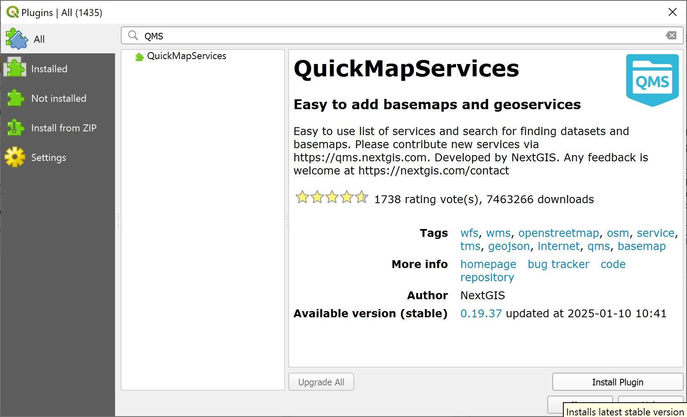 ] ] --- name: H95a91 .toc.sidebar.left-column[ .outline[ # [К 06 февраля](#dataset).fg[] ## [Данные](#dataset) ## [Программы](#soft).fg[] ### [QGIS](#soft).fg[] #### [Ядро](#soft) #### [Расширения](#soft-qgis-plugins).fg[] ##### [QuickMapServices](#H19bdb) <span class="bullet bullet">[•](#H19bdb)</span><span class="bullet bullet">[•](#Hc758f)</span><span class="bullet bullet">[•](#Hb05fc)</span><span class="bullet bullet">[•](#He2ae2)</span><span class="bullet bullet-active">[•](#H95a91)</span><span class="bullet mslide22m">[•](#H0ca04)</span>.fg[].bg[] ### [R](#H11d0d) ## [Попробовать](#before) ] ] .toc.mainbar.right-column.scrollable[ .header.broad[ QuickMapServices ] .fixprecode[ Получить набор готовых сервисов 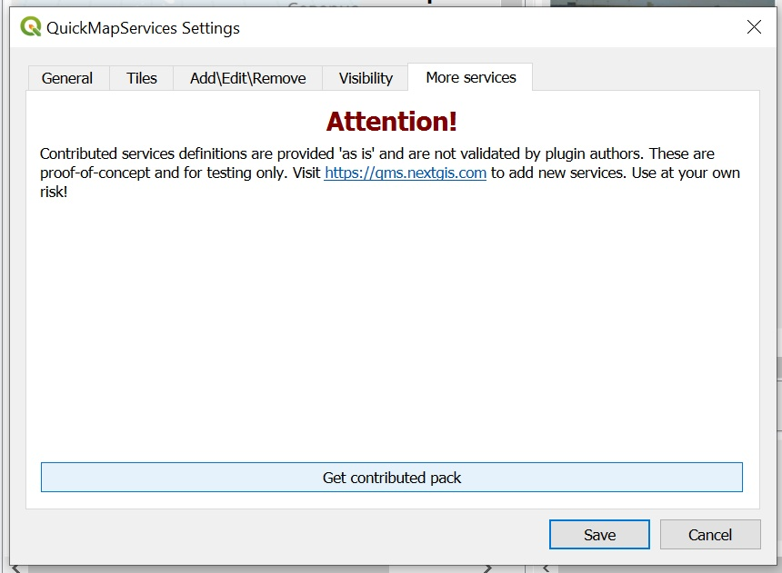 ] ] --- name: H0ca04 .toc.sidebar.left-column[ .outline[ # [К 06 февраля](#dataset).fg[] ## [Данные](#dataset) ## [Программы](#soft).fg[] ### [QGIS](#soft).fg[] #### [Ядро](#soft) #### [Расширения](#soft-qgis-plugins).fg[] ##### [QuickMapServices](#H19bdb) <span class="bullet bullet">[•](#H19bdb)</span><span class="bullet bullet">[•](#Hc758f)</span><span class="bullet bullet">[•](#Hb05fc)</span><span class="bullet bullet">[•](#He2ae2)</span><span class="bullet bullet">[•](#H95a91)</span><span class="bullet bullet-active">[•](#H0ca04)</span>.fg[].bg[] ### [R](#H11d0d) ## [Попробовать](#before) ] ] .toc.mainbar.right-column.scrollable[ .header.broad[ QuickMapServices ] .fixprecode[ 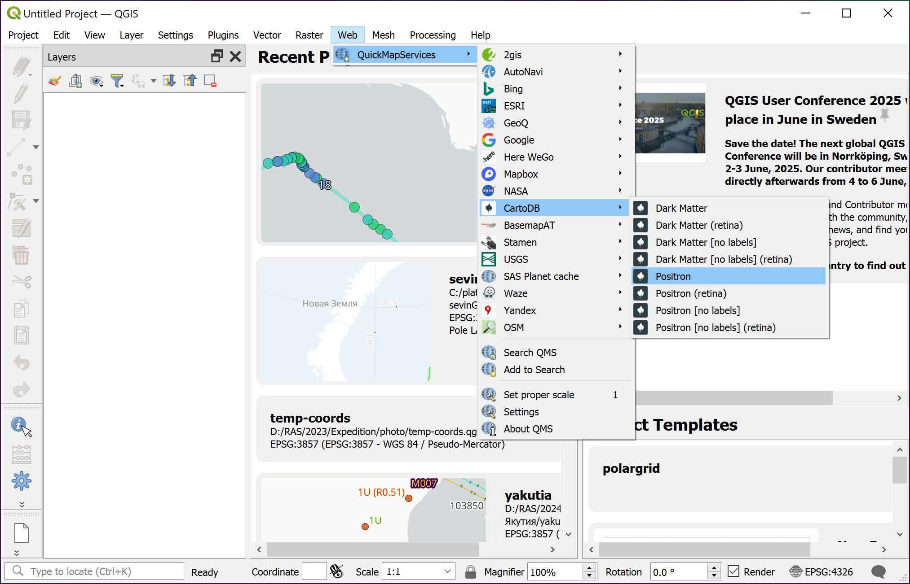 ] ] --- name: H11d0d .toc.sidebar.left-column[ .outline[ # [К 06 февраля](#dataset).fg[] ## [Данные](#dataset) ## [Программы](#soft).fg[] ### [QGIS](#soft) ### [R](#H11d0d).fg[].bg[] #### [Ядро](#Hab88d) #### [Пакеты](#H7d2e5) ## [Попробовать](#before) ] ] .toc.mainbar.right-column.scrollable[ .header.broad[ R ] .fixprecode[ https://www.r-project.org/. Выбираем "download R" и сервер для скачивания (mirror). <iframe src="https://www.r-project.org/" width="1330" height="400px" data-external="1"></iframe> ] ] --- name: Hab88d .toc.sidebar.left-column[ .outline[ # [К 06 февраля](#dataset).fg[] ## [Данные](#dataset) ## [Программы](#soft).fg[] ### [QGIS](#soft) ### [R](#H11d0d).fg[] #### [Ядро](#Hab88d).fg[].bg[] #### [Пакеты](#H7d2e5) ## [Попробовать](#before) ] ] .toc.mainbar.right-column.scrollable[ .header.broad[ Ядро ] .fixprecode[ https://cloud.r-project.org/ <iframe src="https://cloud.r-project.org/banner.shtml" width="1330" height="400px" data-external="1"></iframe> ] ] --- name: H7d2e5 .toc.sidebar.left-column[ .outline[ # [К 06 февраля](#dataset).fg[] ## [Данные](#dataset) ## [Программы](#soft).fg[] ### [QGIS](#soft) ### [R](#H11d0d).fg[] #### [Ядро](#Hab88d) #### [Пакеты](#H7d2e5) <span class="bullet bullet-active">[•](#H7d2e5)</span><span class="bullet mslide26m">[•](#H0bcd8)</span>.fg[].bg[] ## [Попробовать](#before) ] ] .toc.mainbar.right-column.scrollable[ .header.broad[ Пакеты ] .fixprecode[ https://cloud.r-project.org/web/packages/ <iframe src="https://cloud.r-project.org/web/packages/" width="1330" height="400px" data-external="1"></iframe> ] ] --- name: H0bcd8 .toc.sidebar.left-column[ .outline[ # [К 06 февраля](#dataset).fg[] ## [Данные](#dataset) ## [Программы](#soft).fg[] ### [QGIS](#soft) ### [R](#H11d0d).fg[] #### [Ядро](#Hab88d) #### [Пакеты](#H7d2e5) <span class="bullet bullet">[•](#H7d2e5)</span><span class="bullet bullet-active">[•](#H0bcd8)</span>.fg[].bg[] ## [Попробовать](#before) ] ] .toc.mainbar.right-column.scrollable[ .header.broad[ Пакеты ] .fixprecode[ [Отображение всех пакетов](https://cloud.r-project.org/web/packages/available_packages_by_name.html) <iframe src="https://cloud.r-project.org/web/packages/available_packages_by_name.html" width="1330" height="400px" data-external="1"></iframe> ] ] --- name: before .toc.sidebar.left-column[ .outline[ # [К 06 февраля](#dataset).fg[] ## [Данные](#dataset) ## [Программы](#soft) ## [Попробовать](#before).fg[] ### [QGIS](#before).fg[] #### [Открыть проект](#before) <span class="bullet bullet-active">[•](#before)</span><span class="bullet mslide30m">[•](#Hfbb51)</span>.fg[].bg[] #### [Выполнить задание](#H18265) #### [По шагам](#steps) #### [Cвои данные](#H6f712) ### [R](#Ha8575) ] ] .toc.mainbar.right-column.scrollable[ .header.broad[ Открыть проект ] .fixprecode[ 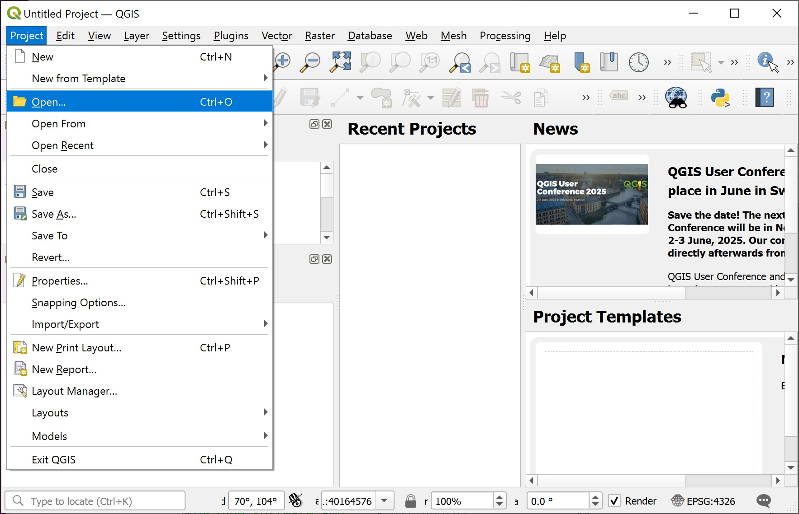 Указать путь к проекту `template.qgz` из набора ([Платонов, 2025](#bib)). ] ] --- name: Hfbb51 .toc.sidebar.left-column[ .outline[ # [К 06 февраля](#dataset).fg[] ## [Данные](#dataset) ## [Программы](#soft) ## [Попробовать](#before).fg[] ### [QGIS](#before).fg[] #### [Открыть проект](#before) <span class="bullet bullet">[•](#before)</span><span class="bullet bullet-active">[•](#Hfbb51)</span>.fg[].bg[] #### [Выполнить задание](#H18265) #### [По шагам](#steps) #### [Cвои данные](#H6f712) ### [R](#Ha8575) ] ] .toc.mainbar.right-column.scrollable[ .header.broad[ Открыть проект ] .fixprecode[ 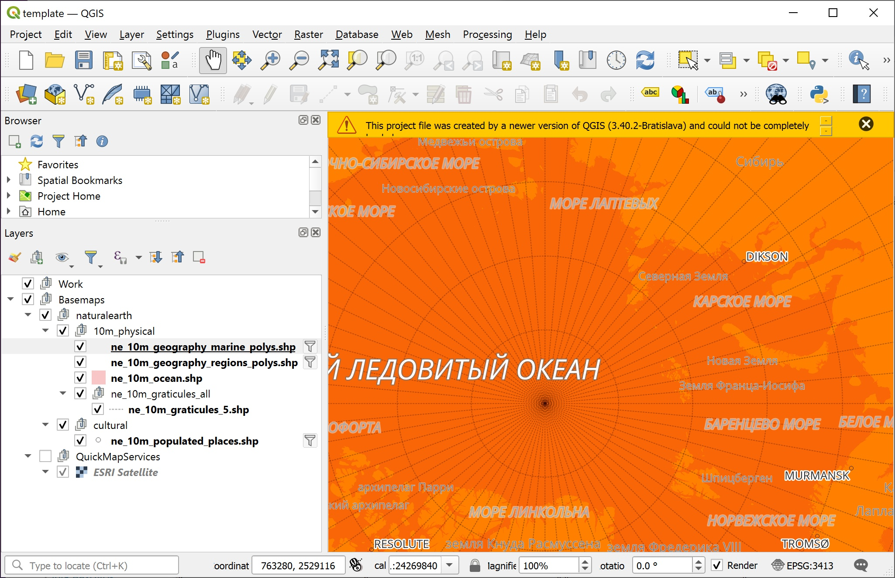 Возможное оранжевое предупреждение проигнорировать и закрыть. ] ] --- name: H18265 .toc.sidebar.left-column[ .outline[ # [К 06 февраля](#dataset).fg[] ## [Данные](#dataset) ## [Программы](#soft) ## [Попробовать](#before).fg[] ### [QGIS](#before).fg[] #### [Открыть проект](#before) #### [Выполнить задание](#H18265) <span class="bullet bullet-active">[•](#H18265)</span><span class="bullet mslide32m">[•](#H15bb7)</span>.fg[].bg[] #### [По шагам](#steps) #### [Cвои данные](#H6f712) ### [R](#Ha8575) ] ] .toc.mainbar.right-column.scrollable[ .header.broad[ Выполнить задание ] .fixprecode[ Отредактировать отображение с красного на голубой 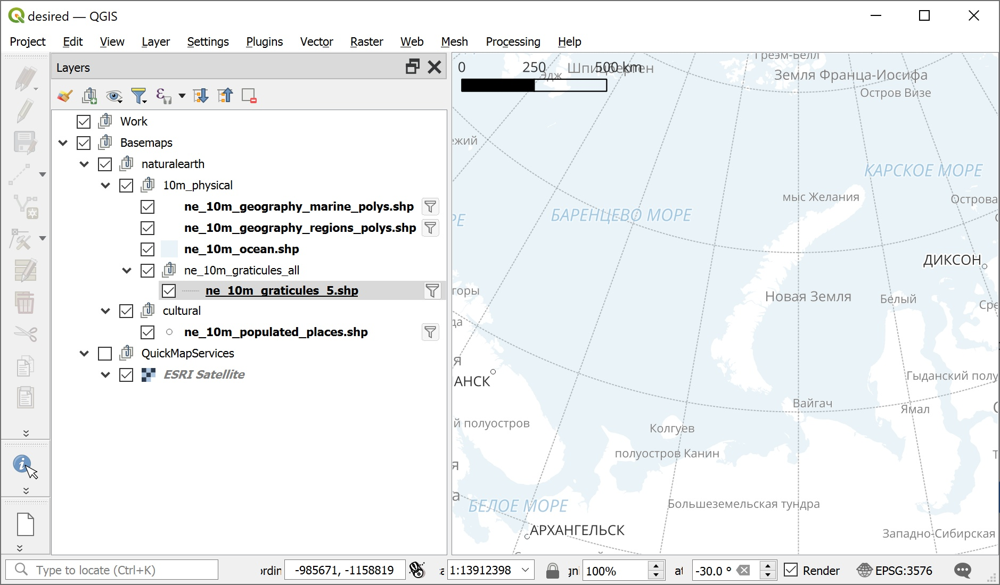 ] ] --- name: H15bb7 .toc.sidebar.left-column[ .outline[ # [К 06 февраля](#dataset).fg[] ## [Данные](#dataset) ## [Программы](#soft) ## [Попробовать](#before).fg[] ### [QGIS](#before).fg[] #### [Открыть проект](#before) #### [Выполнить задание](#H18265) <span class="bullet bullet">[•](#H18265)</span><span class="bullet bullet-active">[•](#H15bb7)</span>.fg[].bg[] #### [По шагам](#steps) #### [Cвои данные](#H6f712) ### [R](#Ha8575) ] ] .toc.mainbar.right-column.scrollable[ .header.broad[ Выполнить задание ] .fixprecode[ + Изменить проекцию проекта на азимутальную равноплощадную Ламберта (EPSG:3576) + Скорректировать вращением направление на север + Моря сделать голубыми, сушу не раскрашивать + Названия населенных пунктов сделать русскоязычными + Убрать встречающиеся названия морей и регионов из южного полушария + Добавить масштабную линейку ] ] --- name: steps .toc.sidebar.left-column[ .outline[ # [К 06 февраля](#dataset).fg[] ## [Данные](#dataset) ## [Программы](#soft) ## [Попробовать](#before).fg[] ### [QGIS](#before).fg[] #### [Открыть проект](#before) #### [Выполнить задание](#H18265) #### [По шагам](#steps).fg[] ##### [Свойства проекта](#steps) <span class="bullet bullet-active">[•](#steps)</span><span class="bullet mslide35m">[•](#H8bdfe)</span><span class="bullet mslide36m">[•](#H12d6b)</span><span class="bullet mslide37m">[•](#H65d18)</span>.fg[].bg[] ##### [Cвойства слоя](#H0e205) ##### [Раскраска слоя](#H33c5a) ##### [Таблица атрибутов](#Hd6579) ##### [Извление названий](#He1986) ##### [Лишние названия](#H8d844) ##### [Украшательства](#H48437) ##### [Прореживание долгот](#Hcb243) ##### [Масштабная линейка](#Hb35ae) ##### [Результат](#He0526) #### [Cвои данные](#H6f712) ### [R](#Ha8575) ] ] .toc.mainbar.right-column.scrollable[ .header.broad[ Свойства проекта ] .fixprecode[ <img src="assets/lesson01/Before02-ProjectProperties.jpg" width="1330" height="672" contain style="display: block; margin: auto auto auto 0;" /> ] ] --- name: H8bdfe .toc.sidebar.left-column[ .outline[ # [К 06 февраля](#dataset).fg[] ## [Данные](#dataset) ## [Программы](#soft) ## [Попробовать](#before).fg[] ### [QGIS](#before).fg[] #### [Открыть проект](#before) #### [Выполнить задание](#H18265) #### [По шагам](#steps).fg[] ##### [Свойства проекта](#steps) <span class="bullet bullet">[•](#steps)</span><span class="bullet bullet-active">[•](#H8bdfe)</span><span class="bullet mslide36m">[•](#H12d6b)</span><span class="bullet mslide37m">[•](#H65d18)</span>.fg[].bg[] ##### [Cвойства слоя](#H0e205) ##### [Раскраска слоя](#H33c5a) ##### [Таблица атрибутов](#Hd6579) ##### [Извление названий](#He1986) ##### [Лишние названия](#H8d844) ##### [Украшательства](#H48437) ##### [Прореживание долгот](#Hcb243) ##### [Масштабная линейка](#Hb35ae) ##### [Результат](#He0526) #### [Cвои данные](#H6f712) ### [R](#Ha8575) ] ] .toc.mainbar.right-column.scrollable[ .header.broad[ Свойства проекта ] .fixprecode[ Заменить цвет фона на белый, чтобы убрать красноту отображения. 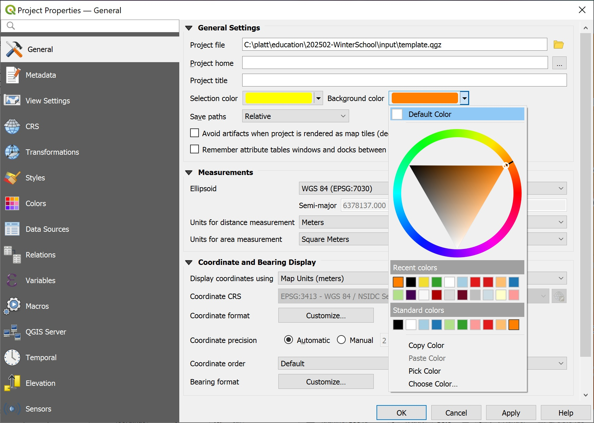 ] ] --- name: H12d6b .toc.sidebar.left-column[ .outline[ # [К 06 февраля](#dataset).fg[] ## [Данные](#dataset) ## [Программы](#soft) ## [Попробовать](#before).fg[] ### [QGIS](#before).fg[] #### [Открыть проект](#before) #### [Выполнить задание](#H18265) #### [По шагам](#steps).fg[] ##### [Свойства проекта](#steps) <span class="bullet bullet">[•](#steps)</span><span class="bullet bullet">[•](#H8bdfe)</span><span class="bullet bullet-active">[•](#H12d6b)</span><span class="bullet mslide37m">[•](#H65d18)</span>.fg[].bg[] ##### [Cвойства слоя](#H0e205) ##### [Раскраска слоя](#H33c5a) ##### [Таблица атрибутов](#Hd6579) ##### [Извление названий](#He1986) ##### [Лишние названия](#H8d844) ##### [Украшательства](#H48437) ##### [Прореживание долгот](#Hcb243) ##### [Масштабная линейка](#Hb35ae) ##### [Результат](#He0526) #### [Cвои данные](#H6f712) ### [R](#Ha8575) ] ] .toc.mainbar.right-column.scrollable[ .header.broad[ Свойства проекта ] .fixprecode[ Изменить проекцию проекта на равноплощадную азимутальную проекцию Ламберта (EPSG:3576) 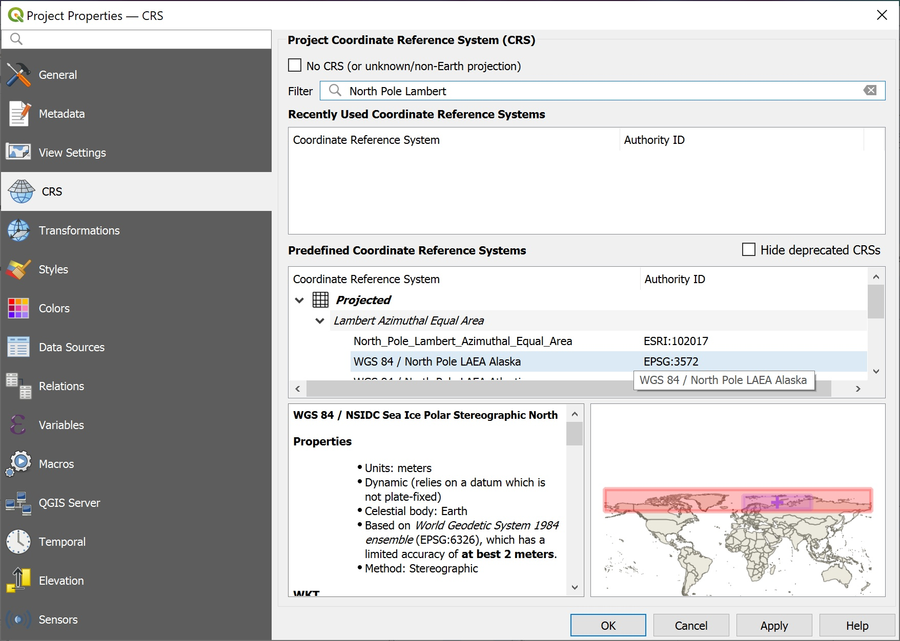 ] ] --- name: H65d18 .toc.sidebar.left-column[ .outline[ # [К 06 февраля](#dataset).fg[] ## [Данные](#dataset) ## [Программы](#soft) ## [Попробовать](#before).fg[] ### [QGIS](#before).fg[] #### [Открыть проект](#before) #### [Выполнить задание](#H18265) #### [По шагам](#steps).fg[] ##### [Свойства проекта](#steps) <span class="bullet bullet">[•](#steps)</span><span class="bullet bullet">[•](#H8bdfe)</span><span class="bullet bullet">[•](#H12d6b)</span><span class="bullet bullet-active">[•](#H65d18)</span>.fg[].bg[] ##### [Cвойства слоя](#H0e205) ##### [Раскраска слоя](#H33c5a) ##### [Таблица атрибутов](#Hd6579) ##### [Извление названий](#He1986) ##### [Лишние названия](#H8d844) ##### [Украшательства](#H48437) ##### [Прореживание долгот](#Hcb243) ##### [Масштабная линейка](#Hb35ae) ##### [Результат](#He0526) #### [Cвои данные](#H6f712) ### [R](#Ha8575) ] ] .toc.mainbar.right-column.scrollable[ .header.broad[ Свойства проекта ] .fixprecode[ В строке состояния указать, на сколько градусов повернуть, чтобы меридиан в центре отображения был направлен вертикально 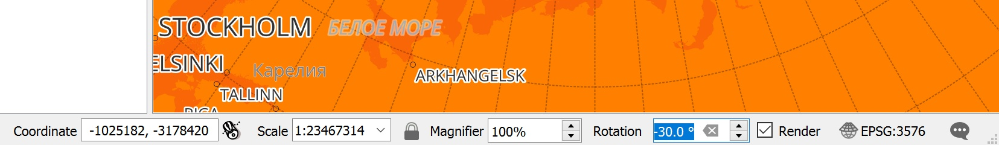 ] ] --- name: H0e205 .toc.sidebar.left-column[ .outline[ # [К 06 февраля](#dataset).fg[] ## [Данные](#dataset) ## [Программы](#soft) ## [Попробовать](#before).fg[] ### [QGIS](#before).fg[] #### [Открыть проект](#before) #### [Выполнить задание](#H18265) #### [По шагам](#steps).fg[] ##### [Свойства проекта](#steps) ##### [Cвойства слоя](#H0e205).fg[].bg[] ##### [Раскраска слоя](#H33c5a) ##### [Таблица атрибутов](#Hd6579) ##### [Извление названий](#He1986) ##### [Лишние названия](#H8d844) ##### [Украшательства](#H48437) ##### [Прореживание долгот](#Hcb243) ##### [Масштабная линейка](#Hb35ae) ##### [Результат](#He0526) #### [Cвои данные](#H6f712) ### [R](#Ha8575) ] ] .toc.mainbar.right-column.scrollable[ .header.broad[ Cвойства слоя ] .fixprecode[ 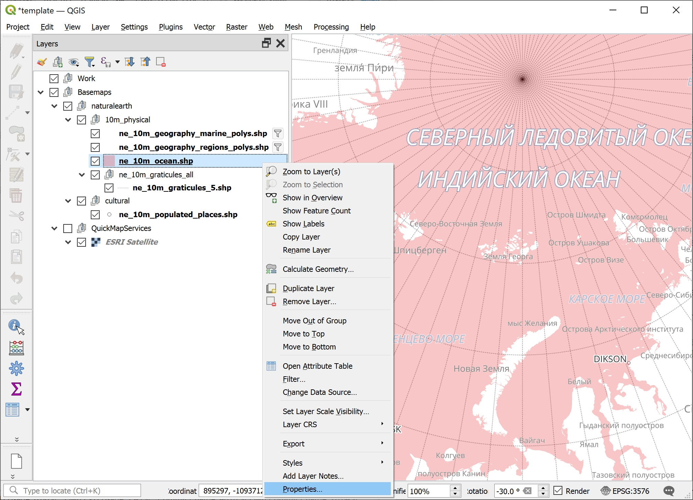 ] ] --- name: H33c5a .toc.sidebar.left-column[ .outline[ # [К 06 февраля](#dataset).fg[] ## [Данные](#dataset) ## [Программы](#soft) ## [Попробовать](#before).fg[] ### [QGIS](#before).fg[] #### [Открыть проект](#before) #### [Выполнить задание](#H18265) #### [По шагам](#steps).fg[] ##### [Свойства проекта](#steps) ##### [Cвойства слоя](#H0e205) ##### [Раскраска слоя](#H33c5a).fg[].bg[] ##### [Таблица атрибутов](#Hd6579) ##### [Извление названий](#He1986) ##### [Лишние названия](#H8d844) ##### [Украшательства](#H48437) ##### [Прореживание долгот](#Hcb243) ##### [Масштабная линейка](#Hb35ae) ##### [Результат](#He0526) #### [Cвои данные](#H6f712) ### [R](#Ha8575) ] ] .toc.mainbar.right-column.scrollable[ .header.broad[ Раскраска слоя ] .fixprecode[ Изменить красный цвет океана на голубой. Можно изменить значение прозрачности слоя. 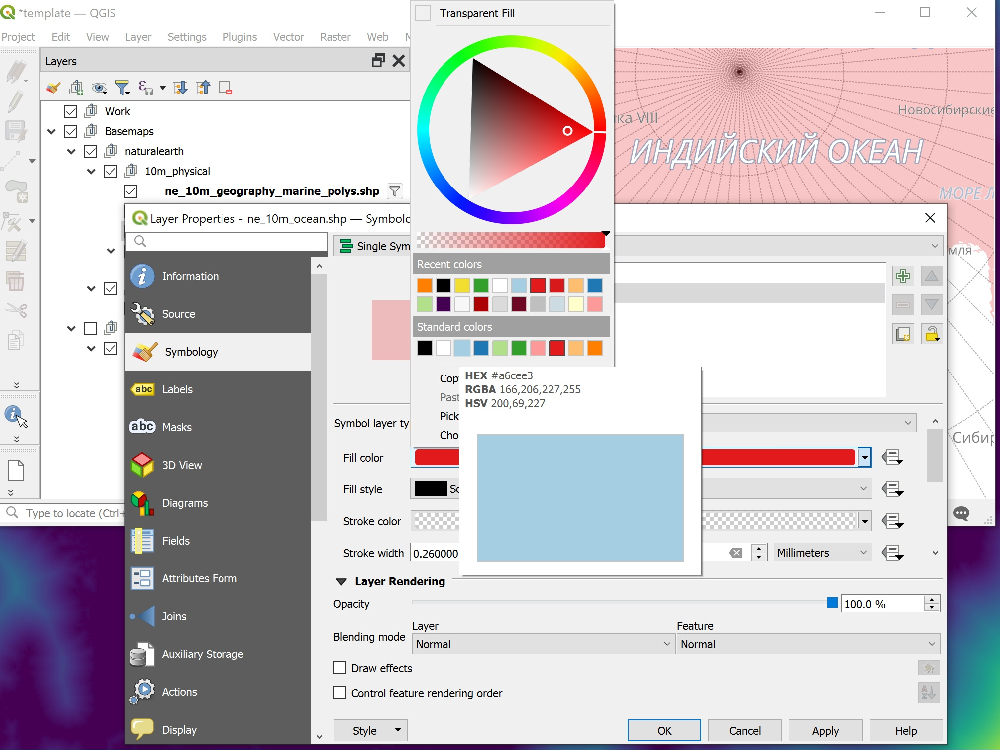 ] ] --- name: Hd6579 .toc.sidebar.left-column[ .outline[ # [К 06 февраля](#dataset).fg[] ## [Данные](#dataset) ## [Программы](#soft) ## [Попробовать](#before).fg[] ### [QGIS](#before).fg[] #### [Открыть проект](#before) #### [Выполнить задание](#H18265) #### [По шагам](#steps).fg[] ##### [Свойства проекта](#steps) ##### [Cвойства слоя](#H0e205) ##### [Раскраска слоя](#H33c5a) ##### [Таблица атрибутов](#Hd6579) <span class="bullet bullet-active">[•](#Hd6579)</span><span class="bullet mslide41m">[•](#Hc3f3b)</span>.fg[].bg[] ##### [Извление названий](#He1986) ##### [Лишние названия](#H8d844) ##### [Украшательства](#H48437) ##### [Прореживание долгот](#Hcb243) ##### [Масштабная линейка](#Hb35ae) ##### [Результат](#He0526) #### [Cвои данные](#H6f712) ### [R](#Ha8575) ] ] .toc.mainbar.right-column.scrollable[ .header.broad[ Таблица атрибутов ] .fixprecode[ 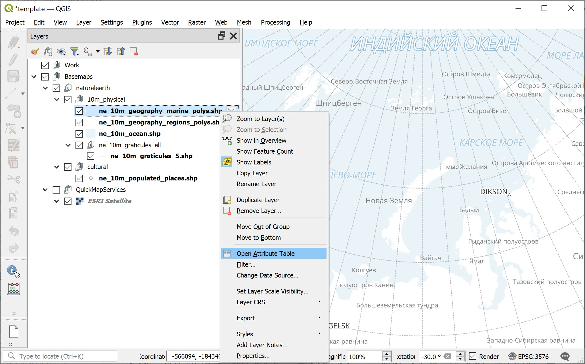 ] ] --- name: Hc3f3b .toc.sidebar.left-column[ .outline[ # [К 06 февраля](#dataset).fg[] ## [Данные](#dataset) ## [Программы](#soft) ## [Попробовать](#before).fg[] ### [QGIS](#before).fg[] #### [Открыть проект](#before) #### [Выполнить задание](#H18265) #### [По шагам](#steps).fg[] ##### [Свойства проекта](#steps) ##### [Cвойства слоя](#H0e205) ##### [Раскраска слоя](#H33c5a) ##### [Таблица атрибутов](#Hd6579) <span class="bullet bullet">[•](#Hd6579)</span><span class="bullet bullet-active">[•](#Hc3f3b)</span>.fg[].bg[] ##### [Извление названий](#He1986) ##### [Лишние названия](#H8d844) ##### [Украшательства](#H48437) ##### [Прореживание долгот](#Hcb243) ##### [Масштабная линейка](#Hb35ae) ##### [Результат](#He0526) #### [Cвои данные](#H6f712) ### [R](#Ha8575) ] ] .toc.mainbar.right-column.scrollable[ .header.broad[ Таблица атрибутов ] .fixprecode[ Это обычная таблица, как в Excel, каждая строка связана с геометрией пространственного объекта. 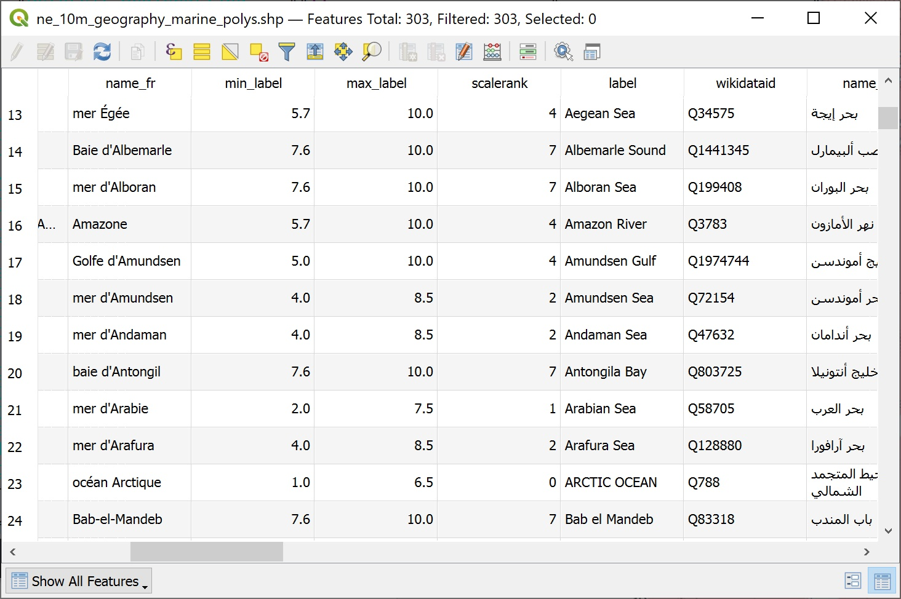 ] ] --- name: He1986 .toc.sidebar.left-column[ .outline[ # [К 06 февраля](#dataset).fg[] ## [Данные](#dataset) ## [Программы](#soft) ## [Попробовать](#before).fg[] ### [QGIS](#before).fg[] #### [Открыть проект](#before) #### [Выполнить задание](#H18265) #### [По шагам](#steps).fg[] ##### [Свойства проекта](#steps) ##### [Cвойства слоя](#H0e205) ##### [Раскраска слоя](#H33c5a) ##### [Таблица атрибутов](#Hd6579) ##### [Извление названий](#He1986).fg[].bg[] ##### [Лишние названия](#H8d844) ##### [Украшательства](#H48437) ##### [Прореживание долгот](#Hcb243) ##### [Масштабная линейка](#Hb35ae) ##### [Результат](#He0526) #### [Cвои данные](#H6f712) ### [R](#Ha8575) ] ] .toc.mainbar.right-column.scrollable[ .header.broad[ Извление названий ] .fixprecode[ Изменить англоязычные названия населённых пунктов на русскоязычные. 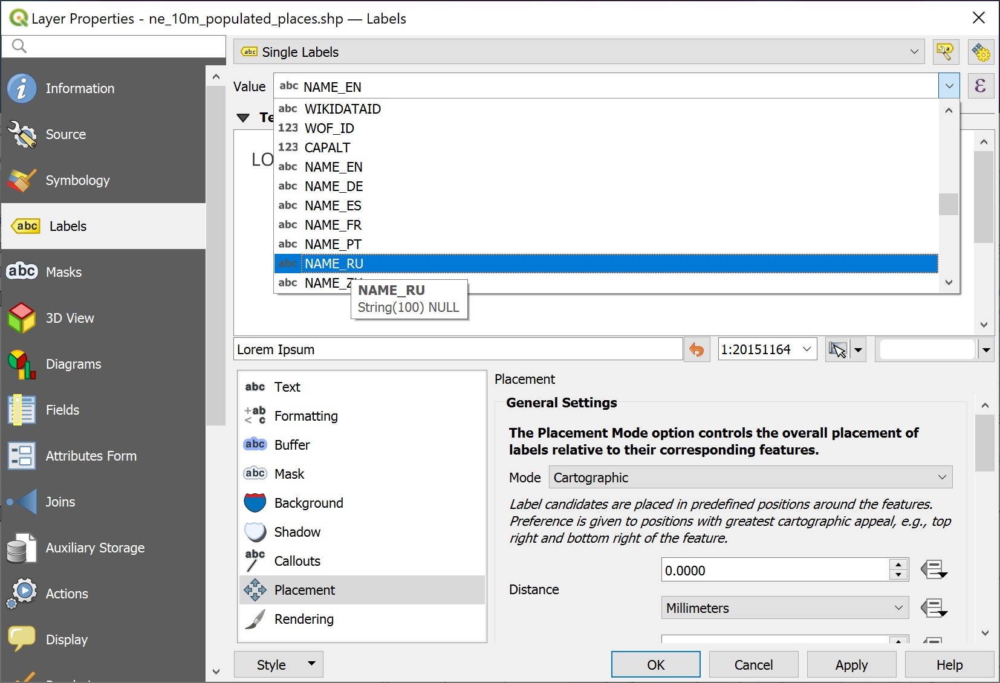 ] ] --- name: H8d844 .toc.sidebar.left-column[ .outline[ # [К 06 февраля](#dataset).fg[] ## [Данные](#dataset) ## [Программы](#soft) ## [Попробовать](#before).fg[] ### [QGIS](#before).fg[] #### [Открыть проект](#before) #### [Выполнить задание](#H18265) #### [По шагам](#steps).fg[] ##### [Свойства проекта](#steps) ##### [Cвойства слоя](#H0e205) ##### [Раскраска слоя](#H33c5a) ##### [Таблица атрибутов](#Hd6579) ##### [Извление названий](#He1986) ##### [Лишние названия](#H8d844) <span class="bullet bullet-active">[•](#H8d844)</span><span class="bullet mslide44m">[•](#Hb3994)</span><span class="bullet mslide45m">[•](#Hc49e7)</span><span class="bullet mslide46m">[•](#H5d972)</span>.fg[].bg[] ##### [Украшательства](#H48437) ##### [Прореживание долгот](#Hcb243) ##### [Масштабная линейка](#Hb35ae) ##### [Результат](#He0526) #### [Cвои данные](#H6f712) ### [R](#Ha8575) ] ] .toc.mainbar.right-column.scrollable[ .header.broad[ Лишние названия ] .fixprecode[ Убрать появляющиеся подписи из южного полушария фильтрацией исключением. 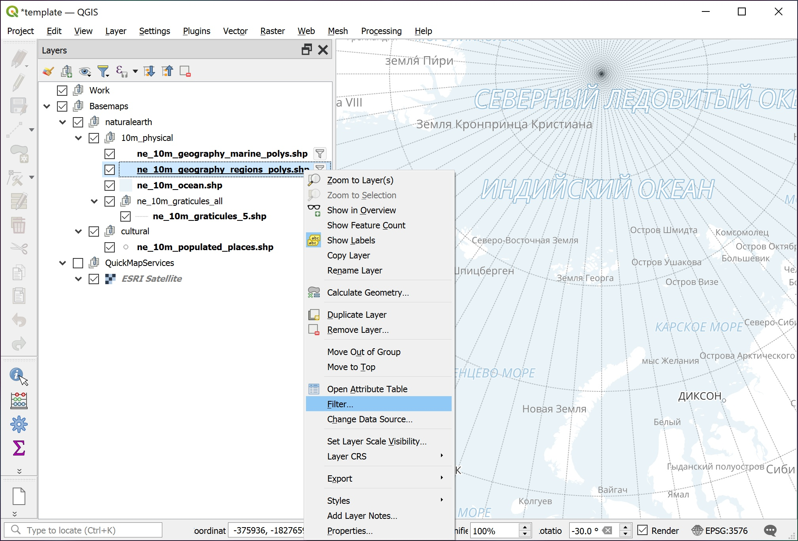 ] ] --- name: Hb3994 .toc.sidebar.left-column[ .outline[ # [К 06 февраля](#dataset).fg[] ## [Данные](#dataset) ## [Программы](#soft) ## [Попробовать](#before).fg[] ### [QGIS](#before).fg[] #### [Открыть проект](#before) #### [Выполнить задание](#H18265) #### [По шагам](#steps).fg[] ##### [Свойства проекта](#steps) ##### [Cвойства слоя](#H0e205) ##### [Раскраска слоя](#H33c5a) ##### [Таблица атрибутов](#Hd6579) ##### [Извление названий](#He1986) ##### [Лишние названия](#H8d844) <span class="bullet bullet">[•](#H8d844)</span><span class="bullet bullet-active">[•](#Hb3994)</span><span class="bullet mslide45m">[•](#Hc49e7)</span><span class="bullet mslide46m">[•](#H5d972)</span>.fg[].bg[] ##### [Украшательства](#H48437) ##### [Прореживание долгот](#Hcb243) ##### [Масштабная линейка](#Hb35ae) ##### [Результат](#He0526) #### [Cвои данные](#H6f712) ### [R](#Ha8575) ] ] .toc.mainbar.right-column.scrollable[ .header.broad[ Лишние названия ] .fixprecode[ Для морей в таблице атрибутов нет столбца по региону, поэтому фильтрация напрямую. 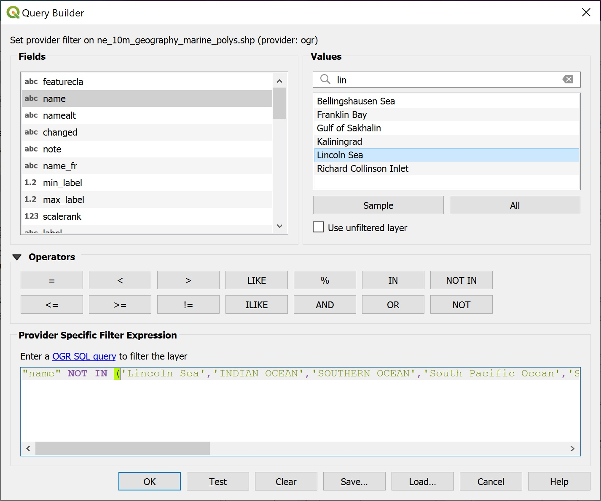 ] ] --- name: Hc49e7 .toc.sidebar.left-column[ .outline[ # [К 06 февраля](#dataset).fg[] ## [Данные](#dataset) ## [Программы](#soft) ## [Попробовать](#before).fg[] ### [QGIS](#before).fg[] #### [Открыть проект](#before) #### [Выполнить задание](#H18265) #### [По шагам](#steps).fg[] ##### [Свойства проекта](#steps) ##### [Cвойства слоя](#H0e205) ##### [Раскраска слоя](#H33c5a) ##### [Таблица атрибутов](#Hd6579) ##### [Извление названий](#He1986) ##### [Лишние названия](#H8d844) <span class="bullet bullet">[•](#H8d844)</span><span class="bullet bullet">[•](#Hb3994)</span><span class="bullet bullet-active">[•](#Hc49e7)</span><span class="bullet mslide46m">[•](#H5d972)</span>.fg[].bg[] ##### [Украшательства](#H48437) ##### [Прореживание долгот](#Hcb243) ##### [Масштабная линейка](#Hb35ae) ##### [Результат](#He0526) #### [Cвои данные](#H6f712) ### [R](#Ha8575) ] ] .toc.mainbar.right-column.scrollable[ .header.broad[ Лишние названия ] .fixprecode[ Для суши можно сделать фильтрацию по региону, который есть в таблице атрибутов. 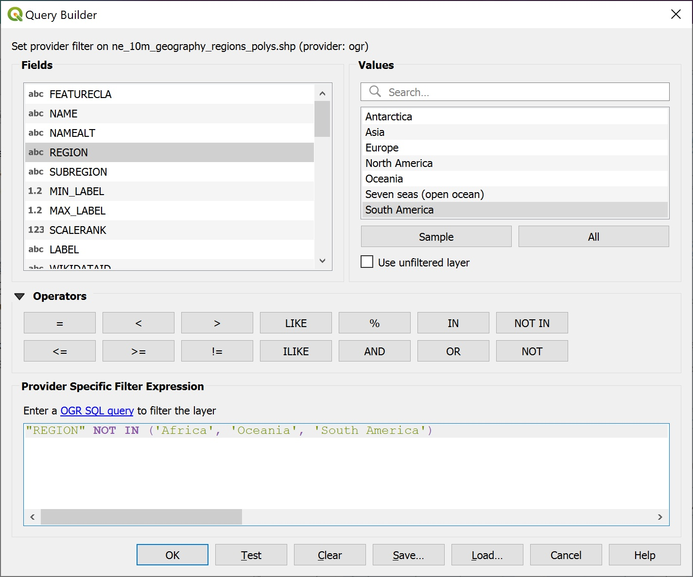 ] ] --- name: H5d972 .toc.sidebar.left-column[ .outline[ # [К 06 февраля](#dataset).fg[] ## [Данные](#dataset) ## [Программы](#soft) ## [Попробовать](#before).fg[] ### [QGIS](#before).fg[] #### [Открыть проект](#before) #### [Выполнить задание](#H18265) #### [По шагам](#steps).fg[] ##### [Свойства проекта](#steps) ##### [Cвойства слоя](#H0e205) ##### [Раскраска слоя](#H33c5a) ##### [Таблица атрибутов](#Hd6579) ##### [Извление названий](#He1986) ##### [Лишние названия](#H8d844) <span class="bullet bullet">[•](#H8d844)</span><span class="bullet bullet">[•](#Hb3994)</span><span class="bullet bullet">[•](#Hc49e7)</span><span class="bullet bullet-active">[•](#H5d972)</span>.fg[].bg[] ##### [Украшательства](#H48437) ##### [Прореживание долгот](#Hcb243) ##### [Масштабная линейка](#Hb35ae) ##### [Результат](#He0526) #### [Cвои данные](#H6f712) ### [R](#Ha8575) ] ] .toc.mainbar.right-column.scrollable[ .header.broad[ Лишние названия ] .fixprecode[ Чтобы отображались лишь названия, без точек-линий-полигонов, слой полностью прозрачный 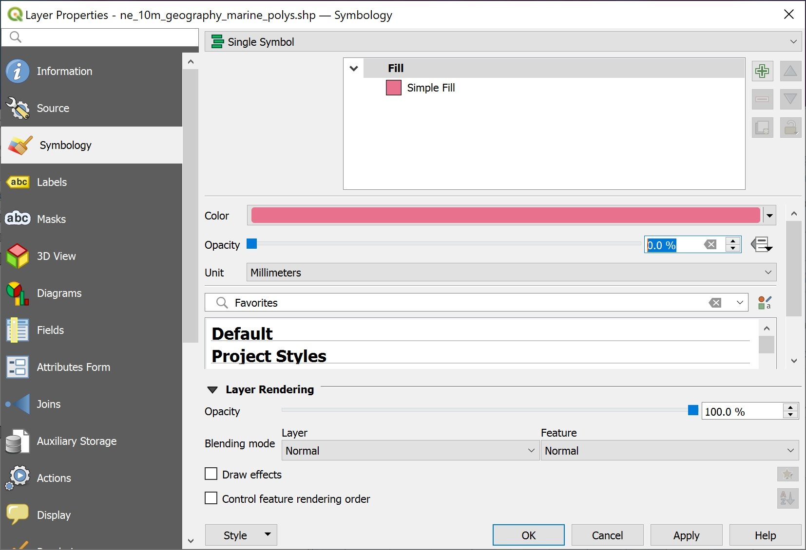 ] ] --- name: H48437 .toc.sidebar.left-column[ .outline[ # [К 06 февраля](#dataset).fg[] ## [Данные](#dataset) ## [Программы](#soft) ## [Попробовать](#before).fg[] ### [QGIS](#before).fg[] #### [Открыть проект](#before) #### [Выполнить задание](#H18265) #### [По шагам](#steps).fg[] ##### [Свойства проекта](#steps) ##### [Cвойства слоя](#H0e205) ##### [Раскраска слоя](#H33c5a) ##### [Таблица атрибутов](#Hd6579) ##### [Извление названий](#He1986) ##### [Лишние названия](#H8d844) ##### [Украшательства](#H48437) <span class="bullet bullet-active">[•](#H48437)</span><span class="bullet mslide48m">[•](#Hba2f0)</span>.fg[].bg[] ##### [Прореживание долгот](#Hcb243) ##### [Масштабная линейка](#Hb35ae) ##### [Результат](#He0526) #### [Cвои данные](#H6f712) ### [R](#Ha8575) ] ] .toc.mainbar.right-column.scrollable[ .header.broad[ Украшательства ] .fixprecode[ Применены разные стили отображения для океанов и морей. 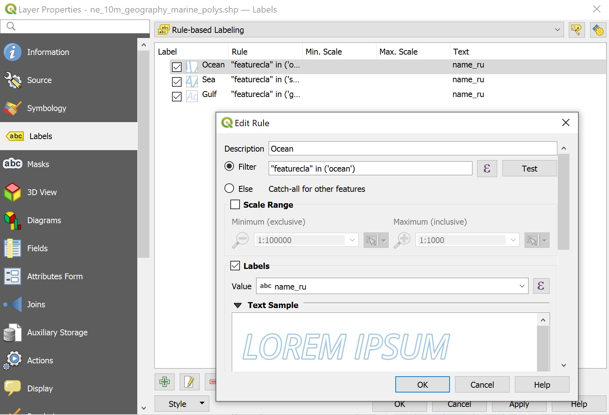 ] ] --- name: Hba2f0 .toc.sidebar.left-column[ .outline[ # [К 06 февраля](#dataset).fg[] ## [Данные](#dataset) ## [Программы](#soft) ## [Попробовать](#before).fg[] ### [QGIS](#before).fg[] #### [Открыть проект](#before) #### [Выполнить задание](#H18265) #### [По шагам](#steps).fg[] ##### [Свойства проекта](#steps) ##### [Cвойства слоя](#H0e205) ##### [Раскраска слоя](#H33c5a) ##### [Таблица атрибутов](#Hd6579) ##### [Извление названий](#He1986) ##### [Лишние названия](#H8d844) ##### [Украшательства](#H48437) <span class="bullet bullet">[•](#H48437)</span><span class="bullet bullet-active">[•](#Hba2f0)</span>.fg[].bg[] ##### [Прореживание долгот](#Hcb243) ##### [Масштабная линейка](#Hb35ae) ##### [Результат](#He0526) #### [Cвои данные](#H6f712) ### [R](#Ha8575) ] ] .toc.mainbar.right-column.scrollable[ .header.broad[ Украшательства ] .fixprecode[ 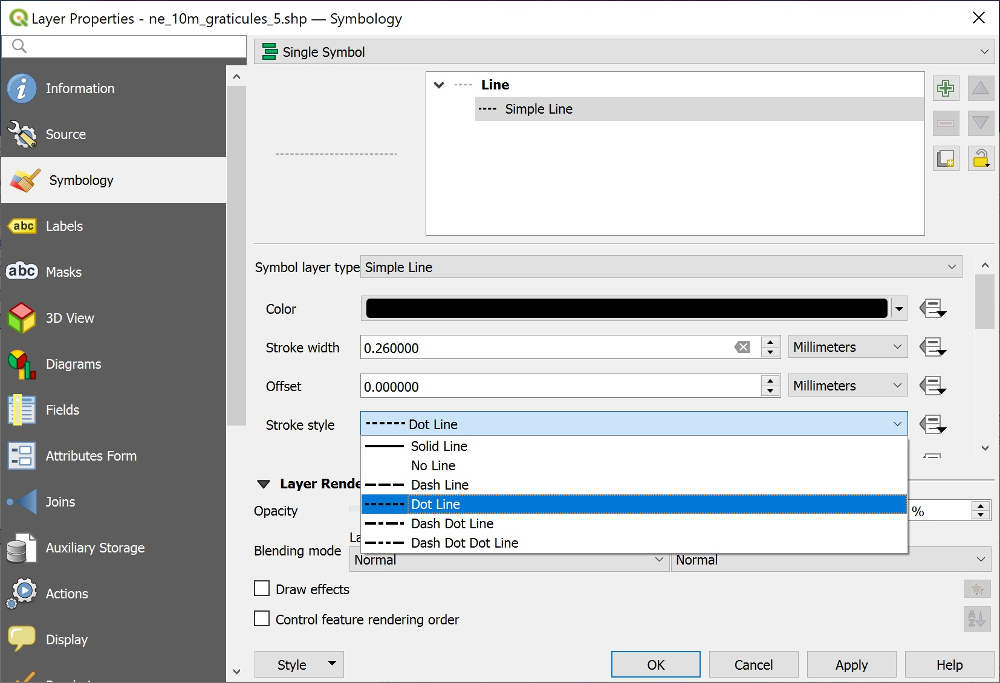 ] ] --- name: Hcb243 .toc.sidebar.left-column[ .outline[ # [К 06 февраля](#dataset).fg[] ## [Данные](#dataset) ## [Программы](#soft) ## [Попробовать](#before).fg[] ### [QGIS](#before).fg[] #### [Открыть проект](#before) #### [Выполнить задание](#H18265) #### [По шагам](#steps).fg[] ##### [Свойства проекта](#steps) ##### [Cвойства слоя](#H0e205) ##### [Раскраска слоя](#H33c5a) ##### [Таблица атрибутов](#Hd6579) ##### [Извление названий](#He1986) ##### [Лишние названия](#H8d844) ##### [Украшательства](#H48437) ##### [Прореживание долгот](#Hcb243).fg[].bg[] ##### [Масштабная линейка](#Hb35ae) ##### [Результат](#He0526) #### [Cвои данные](#H6f712) ### [R](#Ha8575) ] ] .toc.mainbar.right-column.scrollable[ .header.broad[ Прореживание долгот ] .fixprecode[ 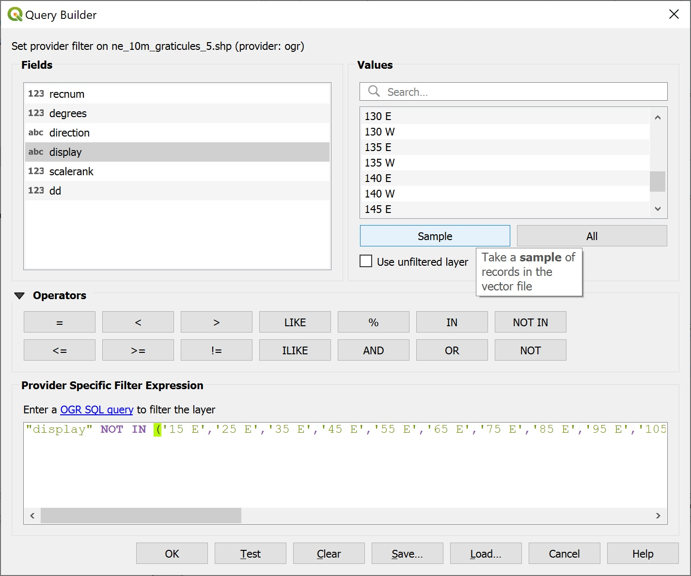 ] ] --- name: Hb35ae .toc.sidebar.left-column[ .outline[ # [К 06 февраля](#dataset).fg[] ## [Данные](#dataset) ## [Программы](#soft) ## [Попробовать](#before).fg[] ### [QGIS](#before).fg[] #### [Открыть проект](#before) #### [Выполнить задание](#H18265) #### [По шагам](#steps).fg[] ##### [Свойства проекта](#steps) ##### [Cвойства слоя](#H0e205) ##### [Раскраска слоя](#H33c5a) ##### [Таблица атрибутов](#Hd6579) ##### [Извление названий](#He1986) ##### [Лишние названия](#H8d844) ##### [Украшательства](#H48437) ##### [Прореживание долгот](#Hcb243) ##### [Масштабная линейка](#Hb35ae) <span class="bullet bullet-active">[•](#Hb35ae)</span><span class="bullet mslide51m">[•](#Hdae88)</span>.fg[].bg[] ##### [Результат](#He0526) #### [Cвои данные](#H6f712) ### [R](#Ha8575) ] ] .toc.mainbar.right-column.scrollable[ .header.broad[ Масштабная линейка ] .fixprecode[ 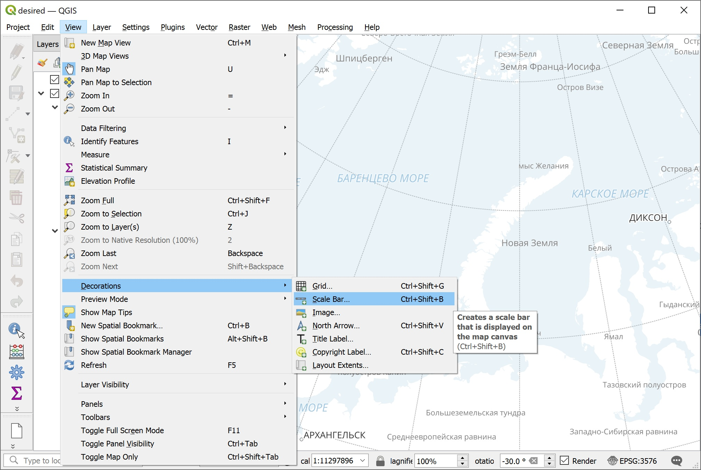 ] ] --- name: Hdae88 .toc.sidebar.left-column[ .outline[ # [К 06 февраля](#dataset).fg[] ## [Данные](#dataset) ## [Программы](#soft) ## [Попробовать](#before).fg[] ### [QGIS](#before).fg[] #### [Открыть проект](#before) #### [Выполнить задание](#H18265) #### [По шагам](#steps).fg[] ##### [Свойства проекта](#steps) ##### [Cвойства слоя](#H0e205) ##### [Раскраска слоя](#H33c5a) ##### [Таблица атрибутов](#Hd6579) ##### [Извление названий](#He1986) ##### [Лишние названия](#H8d844) ##### [Украшательства](#H48437) ##### [Прореживание долгот](#Hcb243) ##### [Масштабная линейка](#Hb35ae) <span class="bullet bullet">[•](#Hb35ae)</span><span class="bullet bullet-active">[•](#Hdae88)</span>.fg[].bg[] ##### [Результат](#He0526) #### [Cвои данные](#H6f712) ### [R](#Ha8575) ] ] .toc.mainbar.right-column.scrollable[ .header.broad[ Масштабная линейка ] .fixprecode[ 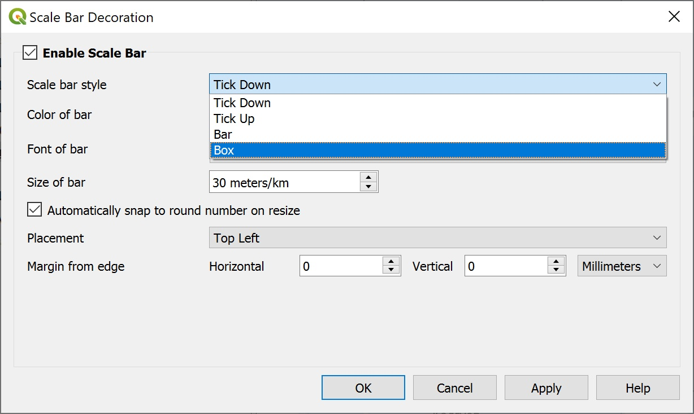 ] ] --- name: He0526 .toc.sidebar.left-column[ .outline[ # [К 06 февраля](#dataset).fg[] ## [Данные](#dataset) ## [Программы](#soft) ## [Попробовать](#before).fg[] ### [QGIS](#before).fg[] #### [Открыть проект](#before) #### [Выполнить задание](#H18265) #### [По шагам](#steps).fg[] ##### [Свойства проекта](#steps) ##### [Cвойства слоя](#H0e205) ##### [Раскраска слоя](#H33c5a) ##### [Таблица атрибутов](#Hd6579) ##### [Извление названий](#He1986) ##### [Лишние названия](#H8d844) ##### [Украшательства](#H48437) ##### [Прореживание долгот](#Hcb243) ##### [Масштабная линейка](#Hb35ae) ##### [Результат](#He0526).fg[].bg[] #### [Cвои данные](#H6f712) ### [R](#Ha8575) ] ] .toc.mainbar.right-column.scrollable[ .header.broad[ Результат ] .fixprecode[ Сохраните с новым названием. Если совсем ничего не получилось, используйтся файл проекта `desired.qgz` из набора ([Платонов, 2025](#bib)). ] ] --- name: H6f712 .toc.sidebar.left-column[ .outline[ # [К 06 февраля](#dataset).fg[] ## [Данные](#dataset) ## [Программы](#soft) ## [Попробовать](#before).fg[] ### [QGIS](#before).fg[] #### [Открыть проект](#before) #### [Выполнить задание](#H18265) #### [По шагам](#steps) #### [Cвои данные](#H6f712).fg[] ##### [Открыть вектор](#H6f712) <span class="bullet bullet-active">[•](#H6f712)</span><span class="bullet mslide55m">[•](#Hdd854)</span>.fg[].bg[] ##### [Открыть растр](#H79d86) ### [R](#Ha8575) ] ] .toc.mainbar.right-column.scrollable[ .header.broad[ Открыть вектор ] .fixprecode[ <img src="assets/lesson12/AddVector.jpg" width="1330" height="700" style="display: block; margin: auto auto auto 0;" /> ] ] --- name: Hdd854 .toc.sidebar.left-column[ .outline[ # [К 06 февраля](#dataset).fg[] ## [Данные](#dataset) ## [Программы](#soft) ## [Попробовать](#before).fg[] ### [QGIS](#before).fg[] #### [Открыть проект](#before) #### [Выполнить задание](#H18265) #### [По шагам](#steps) #### [Cвои данные](#H6f712).fg[] ##### [Открыть вектор](#H6f712) <span class="bullet bullet">[•](#H6f712)</span><span class="bullet bullet-active">[•](#Hdd854)</span>.fg[].bg[] ##### [Открыть растр](#H79d86) ### [R](#Ha8575) ] ] .toc.mainbar.right-column.scrollable[ .header.broad[ Открыть вектор ] .fixprecode[ <img src="assets/lesson12/SelectVector.jpg" width="1330" height="700" style="display: block; margin: auto auto auto 0;" /> ] ] --- name: H79d86 .toc.sidebar.left-column[ .outline[ # [К 06 февраля](#dataset).fg[] ## [Данные](#dataset) ## [Программы](#soft) ## [Попробовать](#before).fg[] ### [QGIS](#before).fg[] #### [Открыть проект](#before) #### [Выполнить задание](#H18265) #### [По шагам](#steps) #### [Cвои данные](#H6f712).fg[] ##### [Открыть вектор](#H6f712) ##### [Открыть растр](#H79d86) <span class="bullet bullet-active">[•](#H79d86)</span><span class="bullet mslide57m">[•](#H338b2)</span><span class="bullet mslide58m">[•](#Ha3343)</span><span class="bullet mslide59m">[•](#Hd4330)</span><span class="bullet mslide60m">[•](#H86c2e)</span>.fg[].bg[] ### [R](#Ha8575) ] ] .toc.mainbar.right-column.scrollable[ .header.broad[ Открыть растр ] .fixprecode[ <img src="assets/lesson12/AddRaster.jpg" width="1330" height="700" style="display: block; margin: auto auto auto 0;" /> ] ] --- name: H338b2 .toc.sidebar.left-column[ .outline[ # [К 06 февраля](#dataset).fg[] ## [Данные](#dataset) ## [Программы](#soft) ## [Попробовать](#before).fg[] ### [QGIS](#before).fg[] #### [Открыть проект](#before) #### [Выполнить задание](#H18265) #### [По шагам](#steps) #### [Cвои данные](#H6f712).fg[] ##### [Открыть вектор](#H6f712) ##### [Открыть растр](#H79d86) <span class="bullet bullet">[•](#H79d86)</span><span class="bullet bullet-active">[•](#H338b2)</span><span class="bullet mslide58m">[•](#Ha3343)</span><span class="bullet mslide59m">[•](#Hd4330)</span><span class="bullet mslide60m">[•](#H86c2e)</span>.fg[].bg[] ### [R](#Ha8575) ] ] .toc.mainbar.right-column.scrollable[ .header.broad[ Открыть растр ] .fixprecode[ 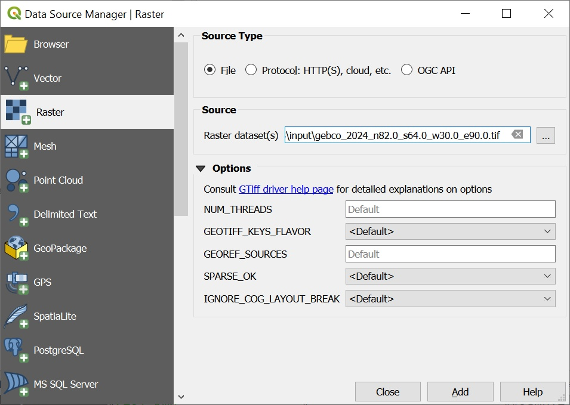 ] ] --- name: Ha3343 .toc.sidebar.left-column[ .outline[ # [К 06 февраля](#dataset).fg[] ## [Данные](#dataset) ## [Программы](#soft) ## [Попробовать](#before).fg[] ### [QGIS](#before).fg[] #### [Открыть проект](#before) #### [Выполнить задание](#H18265) #### [По шагам](#steps) #### [Cвои данные](#H6f712).fg[] ##### [Открыть вектор](#H6f712) ##### [Открыть растр](#H79d86) <span class="bullet bullet">[•](#H79d86)</span><span class="bullet bullet">[•](#H338b2)</span><span class="bullet bullet-active">[•](#Ha3343)</span><span class="bullet mslide59m">[•](#Hd4330)</span><span class="bullet mslide60m">[•](#H86c2e)</span>.fg[].bg[] ### [R](#Ha8575) ] ] .toc.mainbar.right-column.scrollable[ .header.broad[ Открыть растр ] .fixprecode[ 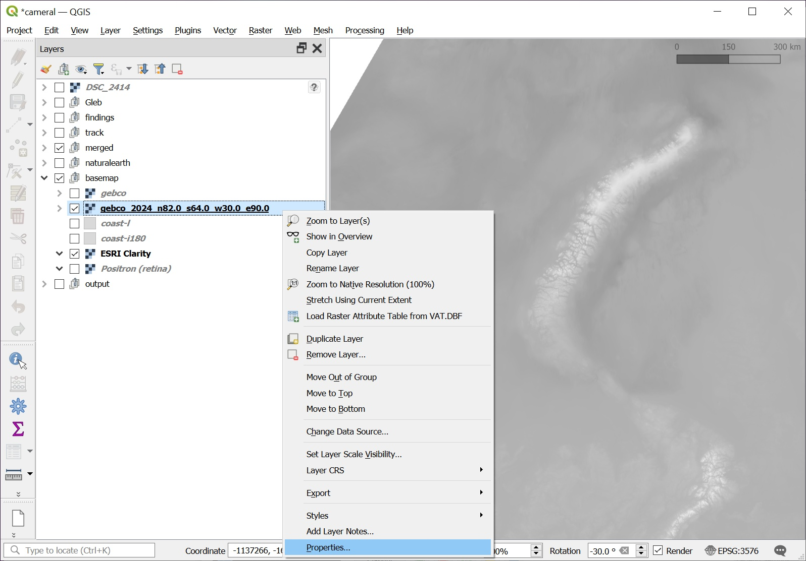 ] ] --- name: Hd4330 .toc.sidebar.left-column[ .outline[ # [К 06 февраля](#dataset).fg[] ## [Данные](#dataset) ## [Программы](#soft) ## [Попробовать](#before).fg[] ### [QGIS](#before).fg[] #### [Открыть проект](#before) #### [Выполнить задание](#H18265) #### [По шагам](#steps) #### [Cвои данные](#H6f712).fg[] ##### [Открыть вектор](#H6f712) ##### [Открыть растр](#H79d86) <span class="bullet bullet">[•](#H79d86)</span><span class="bullet bullet">[•](#H338b2)</span><span class="bullet bullet">[•](#Ha3343)</span><span class="bullet bullet-active">[•](#Hd4330)</span><span class="bullet mslide60m">[•](#H86c2e)</span>.fg[].bg[] ### [R](#Ha8575) ] ] .toc.mainbar.right-column.scrollable[ .header.broad[ Открыть растр ] .fixprecode[ <img src="assets/lesson12/RasterColorization.jpg" width="1330" height="700" style="display: block; margin: auto auto auto 0;" /> ] ] --- name: H86c2e .toc.sidebar.left-column[ .outline[ # [К 06 февраля](#dataset).fg[] ## [Данные](#dataset) ## [Программы](#soft) ## [Попробовать](#before).fg[] ### [QGIS](#before).fg[] #### [Открыть проект](#before) #### [Выполнить задание](#H18265) #### [По шагам](#steps) #### [Cвои данные](#H6f712).fg[] ##### [Открыть вектор](#H6f712) ##### [Открыть растр](#H79d86) <span class="bullet bullet">[•](#H79d86)</span><span class="bullet bullet">[•](#H338b2)</span><span class="bullet bullet">[•](#Ha3343)</span><span class="bullet bullet">[•](#Hd4330)</span><span class="bullet bullet-active">[•](#H86c2e)</span>.fg[].bg[] ### [R](#Ha8575) ] ] .toc.mainbar.right-column.scrollable[ .header.broad[ Открыть растр ] .fixprecode[ <img src="assets/lesson12/RasterOutput.jpg" width="1330" height="700" style="display: block; margin: auto auto auto 0;" /> ] ] --- name: Ha8575 .toc.sidebar.left-column[ .outline[ # [К 06 февраля](#dataset).fg[] ## [Данные](#dataset) ## [Программы](#soft) ## [Попробовать](#before).fg[] ### [QGIS](#before) ### [R](#Ha8575).fg[].bg[] ] ] .toc.mainbar.right-column.scrollable[ .header.broad[ R ] .fixprecode[ ``` r pkgList <- c("png","mapview","tmap","sf","terra","adehabitatLT","readxl" ,"tidyr","lwgeom","geosphere","ggstatsplot","ursa") repos <- "https://cloud.r-project.org/" type <- if (.Platform$OS.type=="windows") "binary" else getOption("pkgType") ``` ``` r available <- sapply(pkgList,function(pkg) { if (requireNamespace(pkg)) return(TRUE) install.packages(pkg,repos=repos,type=type) requireNamespace(pkg) }) ``` ``` r if (packageVersion("ursa")<"3.11.2") install.packages("ursa",repos=repos,type=type) ``` ``` r packageVersion("ursa") ``` ``` [1] '3.11.2.1160' ``` ``` r available ``` ``` png mapview tmap sf terra adehabitatLT TRUE TRUE TRUE TRUE TRUE TRUE readxl tidyr lwgeom geosphere ggstatsplot ursa TRUE TRUE TRUE TRUE TRUE TRUE ``` ``` r c('Everything is ok?'=all(available)) ``` ``` Everything is ok? TRUE ``` <!-- <a name=cite-Durner2009></a>([Durner Douglas et al., 2009](#bib)) --> ] ] --- name: bib class: notable .footnote.small.bibliography[ <div class="backtoshow"><a href="javascript:window.history.back();">↩</a></div> **** <a name=bib-Durner2009></a>[Durner, G. M., D. C. Douglas, R. M. Nielson, S. C. Amstrup, T. L. McDonald, I. Stirling, M. Mauritzen, E. W. Born, Ø. Wiig, E. DeWeaver, M. C. Serreze, S. E. Belikov, M. M. Holland, J. Maslanik, J. Aars, D. A. Bailey, and A. E. Derocher](#bib) (2009). "Predicting 21st-century polar bear habitat distribution from global climate models". In: _Ecological Monographs_ 79.1, pp. 25-58. ISSN: 1557-7015. DOI: [10.1890/07-2089.1](https://doi.org/10.1890%2F07-2089.1). <a name=bib-winterschool2025></a>[Платонов, Н.](#bib) (2025). _Набор данных для практикума по применению геоинформационных систем для обработки данных судовых учётов морских млекопитающих_. DOI: [10.5281/zenodo.14743126](https://doi.org/10.5281%2Fzenodo.14743126). ]